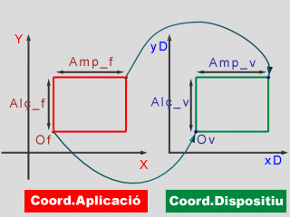
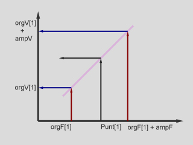
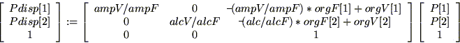

Anomenem transformació món-dispositiu al subprocés que modifica les coordenades dels vèrtexs de les primitives gràfiques, referenciats respecte al sistema de coordenades de l'aplicació, per a referenciar-les respecte al sistema de coordenades de dispositiu. Requereix la definició prèvia d'una Finestra_2D i d'una Vista:
Per a la realització de la transformació, es fan correspodre els límits de la Finestra_2D amb els de la Vista, d'aquesta manera es garanteix que tot punt interior a la Finestra_2D es visualitza en el interior de la Vista. La figura mostra el sistema de correspondències entre la Finestra 2D i la Vista que cal programar.
|  |
Per tant, la correspondència es pot expressar com dues aplicacions afins una respecte a les coordenades abscisses i l'altre entre les ordenades:
Pdisp[1] := (ampV/ampF)* P[1]-((ampV/ampF)*orgF[1] - orgV[1])= a * P[1] + b Pdisp[2] := (alçV/alçF)* P[2]-((alç/alçF)*orgF[2] - orgV[2]) = c * P[2] + d
Òbviament, aquestes aplicacions es poden expressar de forma matricial amb coordenades homogènies:
|  |
Aquesta matriu l'anomenarem de transformació món-dispositiu (MTMD) i podeu observar que representa per a cada coordenada un escalat i una translació. Els valors de l'escalat són la relació d'amplades entre les dues finestres (ampV/ampF) per les abscisses, i la relació d'alçades (alçV/alçF) per les ordenades. Quan aquests escalats no coincideixen es produeix la deformació en la visualització que s'ha comentat en apartats anteriors (no es conserva la relació d'aspecte).
Malgrat que es pot implementar la transformació món-dispositiu com un algorisme que realitza el producte del vector P de coordenades del punt per la matriu MTMD, per eficiència de càlculs i en funció del hardware que s'utilitzi és preferible realitzar el càlcul programant directament l'expressió de transformació afí. Cada cop que es redefineix la Finestra_2D i/o la Vista, cal recalcular els paràmetres a,b,c i d.
Cal recordar que les coordenades de dipositiu són enteres, per
tant, un cop efectuada la transformació cal discretitzar a un valor
enter (generalment es realitza un truncament del valor obtingut).